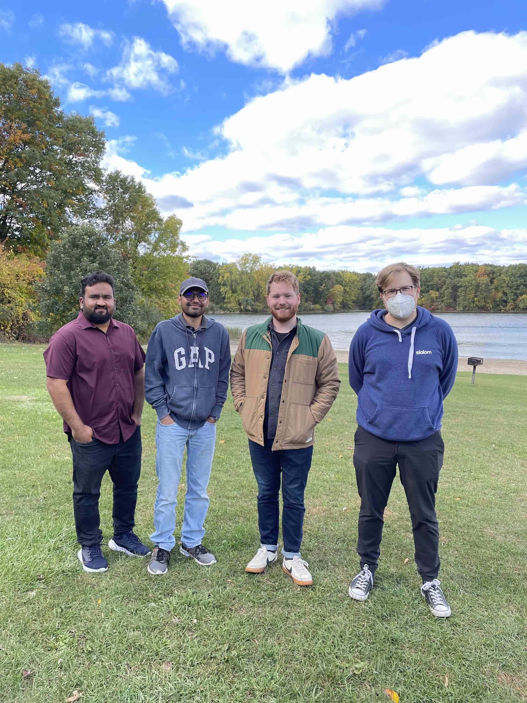
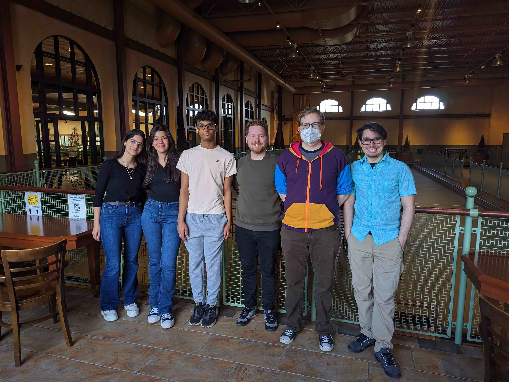
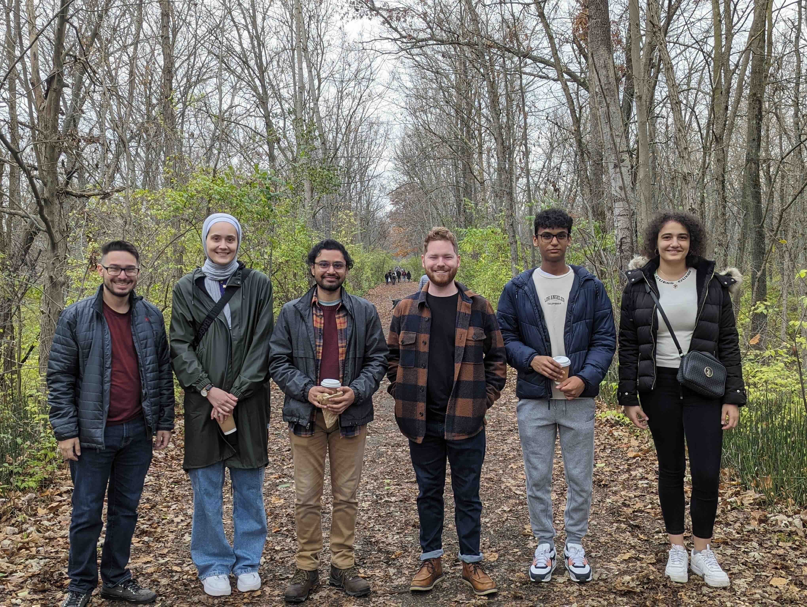

News
{% assign news_data = site.data.news | sort: 'date' | reverse %}
{% for news in news_data limit: 5 %}
- {{ news.date }}: {{ news.text }}
{% endfor %}
Address
For general inquiries about the lab, please contact Prof. Steven Wilson
Gallery


